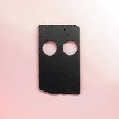

No Ripcord's 50 Best Albums of 2018
By No Ripcord Staff
 20. Thou
20. Thou
 16. Yves Tumor
16. Yves Tumor
So this is it! It's time to reveal our top albums of the year. A longstanding tradition since 2002, our full list consists of 50 albums selected by the entire No Ripcord staff.
This list is dedicated in the memory of former staff writer (and my dear uncle Angel Aguilar), who passed away earlier this year at the young age of 60. Juan
...
50. Neneh Cherry
Broken Politics
(Smalltown Supersound)
Broken Politics
(Smalltown Supersound)
Pretty ditties galore here, as Neneh Cherry makes only the fifth solo outing in her distinguished career. Delicate instrumentation lilts along with her typically strong vocals, with nothing jarring or feeling out of place. The percussion is slight and the tones chilled, leaving space for a captivating set of lyrics. Broken Politics is a well-oiled machine festooned with hooks – see the “don’t step all over me” of opener Fallen Leaves, the carefully layered and poetic chorus of Kong and the minimalist repetition of Deep Vein Thrombosis as your reference points here. Cherry’s work is always intriguing and thoughtful, and this is another high water mark for an artist of real class. Tom Parmiter
49. Oneohtrix Point Never
Age Of
(Warp)
Age Of
(Warp)
Regularly walking the line between ambient and abrasive, Daniel Lopatin’s output as Oneohtrix Point Never has often been a daunting prospect. But Age Of is something of an exception with its almost-accessible sound. Or rather “sounds,” given that Age Of is largely framed around knowing pastiches of a grab-bag of genres from neo-classical to sleek r&b (allegedly originally written with Usher in mind), with detours along the way in children’s movie soundtracks and black metal. That Lopatin manages to convincingly ape so many genres is an impressive feat. That he (and a number of high-profile collaborators, including James Blake, Kelsey Lu and ANOHNI) managed to combine them together into something coherent is astonishing. It’s questionable whether Lopatin's intended sci-fi and sociology-inflected narrative is comprehensible - or even present - on the record, but that’s beside the point; especially when Age Of is a frequently bold, surprising listen throughout its runtime. Mark Davison
48. Idles
Joy as an Act of Resistance.
(Partisan Records)
Joy as an Act of Resistance.
(Partisan Records)
With Joy As An Act Of Resistance, Idles set down a 12-track manifesto about laying the world to rights in typically determined fashion, their punk DNA not so much threaded through these works as bludgeoned through the plasterboard with a sledgehammer. It is an approach that won them a huge fan-base on their debut record, and here, you can bet it will translate well live, with several tracks laced with wit while providing interesting, affecting and amusing takes on tired songwriting cliches. Tom Parmiter
47. Adrianne Lenker
abyskiss
(Saddle Creek)
abyskiss
(Saddle Creek)
No one would accuse Big Thief’s music of being particularly loud. But on her own with abysskiss, Adrianne Lenker has crafted an album of pure intimacy, spending most of the record with just a guitar and her voice. If you close your eyes, you could imagine her performing these songs right in front of you. Such a gentle arrangement puts all the weight of expectations on Lenker’s songwriting and she surpasses them. The intricacies of her guitar patterns and the directness of her lyrics on songs like symbol and out of your mind is a powerful combination. This is the type of music that demands you put aside all distractions and just listen. If you do, you’ll be richly rewarded. Joe Marvilli
46. Tune-Yards
I can feel you creep into my private life
(4AD)
I can feel you creep into my private life
(4AD)
There are enough reviewers out there ripping Merrill Garbus apart, both for profiting off Afro-Caribbean influences and for putting out a self-reflective record questioning her place in that world, and that particular dead horse doesn't need another wound (though the irony that those reviewers are all white and male doesn't escape notice). She's still put out a solid 45 minutes of music. Yes, Colonizer is an awkward mess of a track, but the heavy sampling, drum machine, and echoing harmonies are welcome friends on Look at Your Hands, a strong dance-pop single. ABC 123 has a stripped-down simplicity that ties the album into less heavily produced earlier records. Perhaps the message could have been handled more elegantly, but I Can Feel You Creep Into My Private Life reflects a willingness for discomfort most would spurn. Gabbie Nirenburg
45. No Age
Snares Like a Haircut
(Drag City)
Snares Like a Haircut
(Drag City)
After No Age’s...interesting...departure on An Object, California’s No Age took a much-needed break and came back with an album that perfectly highlights the noise-punk duo’s strongest qualities. The shrapnel riffs, urgent drumming, woozy instrumentals and shout-along choruses burst out of Snares Like A Haircut like sparks from a blowtorch, making their latest the loudest and most bombastic release they’ve concocted since their 2008 masterpiece, Nouns. But if that record was the launching point that breathed new life into guitar music a decade ago, than Snares comes as their strong reminder of how two Ramones-worshipping LA punks can not only rattle your eardrums beyond repair, but make you love every second of it. Peter Quinton
44. The Goon Sax
We're Not Talking
(Wichita)
(Wichita)
In We're Not Talking, The Goon Sax further their modest songcraft by sprucing up their tuneful sorrow. The Brisbane trio is quickly developing a signature sound that is honest about where they currently stand in life, as it should be. But there's also a quiet ambition in their crisply strummed compositions, and not just due to their newfound chamber flourishes. There's a seamless fluidity to how they're dependent on each others' input, and their contributions seem to suit their interests. It's an unerringly sincere look into a trio who are moving into adulthood, one stumble at a time. Juan Edgardo Rodríguez
43. Speedy Ortiz
Twerp Verse
Twerp Verse
(Carpark)
As acerbic and catchy as ever, Twerp Verse is packed to bursting with immediately singable hooks on a foundation of familiar '90s alt-rock. Sadie Dupuis's crystal clear vocals resonate across distorted guitars with a piercing political throughline. Oftentimes the lyrics drip with disgust ("In a skeleton suit/tonguing the boot/who is responsible here?") while others are more vengeful ("I'm complete with the devil/he better find a way to smart me"), but absolute unapologetic reclamation of sexual agency takes center stage. The frenetic energy of Lean in When I Suffer is especially well crafted, channeling the likes of Deerhoof; even the mid-song key change is the perfect representation of the panic that the track paints. Where their predecessors were often schmaltzy or just simplistic, Speedy Ortiz' lyrical depth elevates and updates their sound. Gabbie Nirenburg
42. Nine Inch Nails
Bad Witch
(The Null Corporation)
Bad Witch
(The Null Corporation)
Another of 2018’s great surprises, Trent Reznor turns in a short but exploratory vignette of tracks. Starting with all the low-end clamor of days gone by before taking some unexpected twists and turns, a couple of instrumentals manage to somehow wander into jazz-flavored terrain as they approximate a sound that has more in common with drone music than the hard rock and industrial metal ballast of previous releases. Play The Goddamned Part, the first instrumental, is in particular bold new territory for its creator, and asks some intriguing questions of what the group's future releases will consist of. Tom Parmiter
41. Years & Years
Palo Santo
(Universal)
Palo Santo
(Universal)
Given how Years & Years seem so comfortable putting out finely-crafted electronic pop, it’s hard to believe that Palo Santo is only their second album. They’ve managed to get to the top doing things their way, and this release confirms that they’ve a gift for killer choruses that should see them involved near the top of the charts for years to come. In Up In Flames (bizarrely only on the deluxe edition of the album), they’ve created their best ever track, a rumbling behemoth that some synthpop bands spend their entire careers failing to achieve. On this evidence, Years & Years' third album promises to be a treat. Joe Rivers
40. Stephen Malkmus & The Jicks
Sparkle Hard
(Matador)
Sparkle Hard
(Matador)
Sparkle Hard isn’t the album Stephen Malkmus wanted to release this year. He had his eyes set on abandoning his guitar and experimenting with keyboards and Pro Tools before Matador quickly shelved the idea. Instead, we get an album that is more conventional to the point that it could, whisper it quietly, often pass as classic Pavement. But even though he sounds comfortable, it doesn’t feel like Malkmus and the Jicks are coasting on nostalgia. He dabbles with autotune on Rattler, Bike Lane is arguably the most overtly political song he’s ever written, and there’s a wonderful country duet with Kim Gordon (Refute). There’s also the crowd-pleasing jams (Shiggy) and trademark wistful ballads (Solid Silk and Middle America) to ensure that this turned out to be a very good backup plan. Matthew Smith
39. Tim Hecker
Konoyo
(Sunblind Music)
(Sunblind Music)
On the elusive Konoyo, ambient-drone innovator Tim Hecker continues to refine and expand his repertoire. The title, which translates to "this life" from the Japanese, suggests a unique assimilation of his lush, newfangled takes on Western modes and abiding traditions of Eastern music. Taken as a whole, this project eschews expectations Hecker previously established on career-defining work like Ravedeath 1972, which featured beguiling syntheses of harmony and noise in multi-phase sonic architectures. Konoyo rings at a higher frequency like a bell and a flutter glissando, finding an organic intensity without catering to familiarity. The album's restrained grace is often imbued by the transcendent efforts of hichiriki/flutist Motonori Miura and Tokyo Gakuso gagaku ensemble, who harness and transfigure some of the country's oldest native sounds through the taiko (drums), ryūteki (flute) and shō (a 17-pipe horn). While Hecker nods to his influences like Midori Takada on A sodium codec haze, his evocative sequencing on This life also curiously parallels the opening moments of Devil Doll's Dies Irae in the ominous cascade of strings. Grant Phipps
38. Serpentwithfeet
soil
soil
(Secretly Canadian/Tri Angle Records)
As Serpentwithfeet, Josiah Wise's idiosyncratic, queer love songs act as a sort of diaristic exorcism through his tempestuous, yet tender relationship histories on Soil. With luxuriously dark, colorful, baroque-inspired textural production credits from Katie Gately and Clams Casino that augment his distinctively rich falsetto-vibrato, Wise channels the spirituality and gravity of his gospel roots into neo-soul pop earworms. Collectively, they possess a strange and startling intimacy and resound with the irrepressible personalities of both Anohni and Moses Sumney. Soil's closer and first single, Bless Ur Heart, an introspective piano ballad coupled with Gately's purring electronic reverb and synthetic beat, beautifully characterizes the fearlessly piquant detail pouring from every verse in the cherishing of past experience, whether ecstatic or crushing. Elsewhere, on Mourning Song, the metronomic rhythm, fragile vocal refrain, and lyrically enduring heartache linger, longer in the moment, as the inspirited songwriter indulges in his musical desire to "make a pageant of his grief." Grant Phipps
37. Goat Girl
Goat Girl
(Rough Trade)
Goat Girl
(Rough Trade)
Goat Girl’s debut album is far stranger and woozier than lead single The Man would suggest. While that track is a great slice of early-60s power pop, other songs slink by in odd fashions and time signatures that nonetheless get caught in your brain. Cracker Drool interrupts its California beach vibe with a dizzying, circular riff. Burn the Stake rips its gentle music away with a distorted deluge. Creep spits out a bass-and-violin combo for Clottie Cream’s deadpan vocals. The two parts of I Don’t Care contrasts her inner turmoil with an outward poker face. With such a weird debut, it’s clear that Goat Girl will take their music wherever they want, even if that leaves their audience off-balance. Give it a spin and you’ll find yourself happily dazed and confused. Joe Marvilli
36. Tirzah
Devotion
(Domino)
After quietly dropping a pair of EPs earlier this decade, Tirzah Mastin's fully realized full-length, Devotion, unites her affinity for hypnagogic ambiance with alluringly askew, yet immediate alternative R&B hooks. Writing in collaboration with longtime friend Mica Levi (Micachu), the record leans into a cozy bedroom pop aesthetic. While its approach to composition is often minimalistic, the record playfully embraces its unrefined, glitch-oriented production. Take the mid-album Guilty, which surreally juxtaposes a soulfully contorted, auto-tuned vocal melody with an intermittent loop of electric guitar distortion. The intro to the title track also exposes jagged clips of sonic abrasion that hang underneath the repeating lyrics, "So listen to me," by guest Coby Sey, as the wistful keyboard-piano phrase glides in to guide the remaining refrains. Mastin and Levi's offbeat sound-worlds find further resonance in the irregular rhythms of Fine Again, which recall Arthur Russell's vivid experimentalism on World of Echo. Grant Phipps
35. Natalie Prass
The Future and the Past
(ATO Records)
At first glance, The Future and the Past is a modest record, with a cover best described as “demure” and a knowingly retro sound. But, as the title suggests, underneath the classic aesthetic is a fierce, forward-looking attitude. Following the 2016 U.S. election, Prass scrapped a near-finished album, set to work on something more reflective of the times. It’s a quiet anger that powers The Future and the Past, one that could easily be missed, given that it’s packaged in the typically lush production of her long-time collaborator Matthew E White. But this is a case of the medium being the message - in an age typified by bile and division, Prass takes the high-road. With its addictive near-school yard rhyme schemes and some of the best vocal harmonies this side of the Knowles sisters, The Future and the Past invites rather than harangues you to get inside. Mark Davison
34. Exploded View
Obey
(Sacred Bones)
Exploded View is the work of vocalist Annika Henderson and producers Hugo Quezada and Martin Thulin. For Obey, the trio’s second full-length LP, acoustic and electric elements are merged to create a multi-faceted and beautifully subtle release, its most striking (Sleepers), lonely (Open Road), and stressed (Obey) moments offered with delicacy in mind. Though musically disjointed at points, Henderson’s presence is enough for the album’s 10 tracks to retain some consistency, allowing the group’s compositional ideas to be fully investigated without a need for constraint or editing. Obey is pleasant to the ear, even when Exploded View aim for discomfort. Sean Caldwell
33. Gaz Coombes
World's Strongest Man
(Caroline International)
Gaz Coombes refuses to let his past legacy define his future. As the frontman of much-touted Britpop stalwarts Supergrass, the Oxford singer-songwriter has continued to pursue the album format with a more inward-looking approach that separates itself from the signature frolics of his former band. The World's Strongest Man, his third solo offering, shows streaks of his experimental bent, stringing together askew sonic touches over groove-inflected rhythms. Within Coombes's offbeat creations, though, lay significant questions about man's implicit defenses - from the grimly mocking title track to the sly stride of Walk the Walk, he observes how trickery and deceit masquerade as confidence. Whereas in the more susceptible Vanishing Act, he subjects himself to a tension that is almost stifling. Coombes unpacks these probing themes with an air of mystery, twisting and contorting his words with the same mercurial command of his freeform arrangements. And it allows him to, once and for all, step out from the shadow of his former self. Juan Edgardo Rodríguez
32. Robyn
Honey
(Koniwicha/Interscope)
In the eight long, long years since releasing the era-defining Body Talk, Robyn has almost been trolling her loyal fanbase. Collaborations with Röyksopp hinted at what might be on the horizon, but she seemed more content with more longform work and genre explorations with La Bagatelle Magique. Arguably, Honey doesn’t contain the melodic alchemy of Body Talk (though, then again, what does?), but she still does deeply personal lyrics over peerless electro-pop better than anyone else. Blurring the line between humans and robots, Honey draws genuine emotion from its synths and drum machines, and heralds the much-needed return from one of pop’s true leading lights. Joe Rivers
31. Ezra Furman
Transangelic Exodus
(Bella Union)
Ezra Furman has a lot to think about as he drives with a transangel by his side on Transangelic Exodus. But this isn't your weary, leisurely journey - the Chicagoan singer-songwriter moves along at a brisk pace as if he's right in the cusp of captivity, imagining a series of seemingly mundane events with a lively, freewheeling spirit. These loosely connected stories reveal a self-described "queer outlaw" who runs from persecution, invoking the ghosts of classic rock n' roll as he reenvisions these former touchstones alongside a sweeping, operatic plot. He has portrayed the character of the underdog in the past, an outcast who's determined to defy all odds, but never has his dual relationship with queerness and Jewish faith come face to face with such literary profundity. On Exodus, he teaches us that the chase must never cease, especially when we want to protect the things we can't afford to lose. Juan Edgardo Rodríguez
30. Camp Cope
How to Socialise and Make Friends
(Run for Cover Records)
Few bands have as much to say as Camp Cope. Those other bands might make longer albums and more dramatic statements, but would struggle to make half as much impact as the Melbourne trio. Whether it’s a direct response to abuse on the unforgettable The Face of God; or returning snark to those who’ve looked down their nose at them on The Opener; or the loss of a parent on I’ve Got You, this is straightforward, affecting writing. There is some light that gets through, as well: Sagan-Indiana is a delightful tribute to a late friend, and the title track is up there with the year’s best indie rock songs. While their debut slowly made its way across the globe over the past two years, the follow-up immediately positions them as one of the most exciting acts in indie rock. Matthew Smith
29. Noname
Room 25
(No/Name)
With writing boasting greater depth and clarity than that of her debut, Telefone, Fatimah Warner's follow up, Room 25, is an impressive showcase that easily builds off the promise of her debut. Armed with sharp poetic commentary and a cutting matter-of-fact delivery, Room 25 finds Warner examining the process of personal growth with unflinching honesty. Here, she reflects on everything from mortality and love to self-doubt and insecurity with equal measures of sincerity and self-awareness. And when she turns her attention to issues of race and our broken politics, she handles those subjects with appropriately barbed insight and wit. Weaving a tasteful mix of neo-soul with jazz and hip hop, the production helps to further elevate the introspective mood without cluttering the sound. There have been plenty of solid rap albums that have dropped this year, and Room 25 easily stands out as one of the more refreshing ones. Jeremy Monroe
28. Gwenno
Le Kov
(Heavenly)
Ex-Pipette Gwenno Saunders recorded her debut album almost entirely in Welsh – a language spoken by less than a fifth of the population of its native country. For her follow-up, she went with Cornish – one used by perhaps as few as 300 people (according to Wikipedia, at least). Like her first album, Le Kov is driven by a political determination – in this case, a desire to capture the sound of a near-forgotten language, as a reaction to austerity-induced government cuts to programmes designed to preserve and revive it. And while it’s unlikely that few listeners outside of Saunders’s own intimate circle will understand its contents, the fascinating feel of the language is easy to appreciate. Translating as “place of memory,” Le Kov’s fittingly nostalgic feel combined Krautrock-inspired synths with widescreen soundscapes – as if the Nouvelle Vague decamped from the South of France to Newquay. Cornwall has rarely sounded so romantic. Mark Davison
27. Jeff Rosenstock
POST-
(Polyvinyl)
On his third solo outing, Jeff Rosenstock channels the despair of Trump’s America into a thrilling, visceral power-pop record. It’s not a perfect record by any stretch, but there are enough moments of raw energy and emotion to propel most listeners through the less successful segments. The anthemic Yr Throat is one such example, with Rosenstock repeatedly asking, “What's the point of having a voice when it gets stuck inside your throat?” It’s a mantra he follows keenly on Post-, which is surely one of the most successful explorations of our emotional reaction to the Trump presidency. Indeed, given the sorry state of the world, one wonders why there aren’t more overtly political records on this list. David Coleman
26. Deafheaven
Ordinary Corrupt Human Love
(ANTI-)
Deafheaven is one of those bands that is always going to be problematic and something of a hot button topic for some people. Purists arguments aside, though, it's hard to deny that they have been making some seriously great music for nearly a decade now. And while their 2015 album Bermuda is often looked as their defining musical statement, that same argument could be made for Ordinary Corrupt Human Love. What feels at first like a more challenging listen gradually reveals itself to be an especially thought-provoking set of emotionally rich statements. What makes it particularly engaging is, how four albums in, Deafheaven are able to both refine their difficult to categorize sound and step outside of their comfort zone. The end result is a majestic and engaging album that proves the band still have plenty of ground left to explore while making some truly cathartic music along the way. Jeremy Monroe
25. Blood Orange
Negro Swan
(Domino)
In Dev Hynes's view, inclusion is a privilege that is afforded unevenly. He wrestles with this reasoning on his fourth solo outing, Negro Swan, a minimal, yet sprawling, saga where he repeatedly copes with the fact that it's somehow a sin to be intrinsically different. Hynes comes from a place of reluctant acceptance, defiant to societal norms while also struggling to stay complacent when such wrongful perception is practically ubiquitous. Within Hynes's roundabout sequencing lies a melánge of soulful styles, from easygoing R&B to nighttime jazz, all wrapped into his distinctive production choices. But there's a homespun quality to Swan despite its name brand collaborations, a testament to how he doesn't compromise his artistic integrity despite his growing responsibility as a major pop artist. Swan is a treatise, after all, a perceptive document that lays its ideas on injustice and oppression with thoughtful, if sometimes pompous, candor. Hynes feel liberated, and he wants that for those who care about as well, even if it's sometimes difficult to isolate the beauty from the strife. Juan Edgardo Rodríguez
24. Amen Dunes
Freedom
(Sacred Bones)
It's easy to let Damon McMahon's often unintelligible, fractured vocals wash over you - with songs like Miki Dora and Believe, both of which gleam and shine with influences from pop-rock to psychedelia, Freedom is his most accessible album yet. But Freedom is also an album that rewards a listener’s patience. Dealing with his mother's diagnosis with terminal cancer, his father's absence, and a crisis of masculinity, this is the most vulnerable McMahon has been on a record. It’s taken Amen Dunes a decade of making music to achieve a real breakthrough, but the strength of his storytelling means Freedom should be a real career turning point. “This is your time, their time is done,” a child shouts on Intro, they might just be onto something. Matthew Smith
23. Soccer Mommy
Clean
(Fat Possum)
Sophie Allison’s Soccer Mommy project excels in crafting indie pop jams out of only the finest ingredients - heartache, longing, defiance, self-discovery, etc. - but it’s still rare that we get a melancholic collection of songs as polished and complete as we do in Clean. Though Sophie spends Clean’s 35 minutes wrestling with tough emotions - from cutting out toxic people from your life to reconciling with your own self-view - she sows these seeds into a lush garden of direct-yet-poetic lyrics, memorable hooks and crisp production. From honey-dripped acoustic ballads to exuberantly aching rock anthems like Cool and Your Dog, Clean is a diary of vulnerable indie rock confessionals that we should consider ourselves lucky to have shared with us to listen and feel alongside with. Peter Quinton
22. Mount Eerie
Now Only
(PW Elverum and Sun)
In last year’s edition of this feature, I described the previous Mount Eerie record, A Crow Looked At Me, as “unfiltered, raw grief” with “no attempt at universality.” I thought it was a beautiful record, obviously, but it was a stark and brutally honest exploration of Phil Elverum’s state of mind and an immediate response to the loss of his wife. Now Only documents the next stage of his journey. Although grief doesn’t typically follow the clean, linear path Kugler-Ross described, this does demonstrate hints of acceptance; there is also self-deprecation and even some dark humor in the form of the title track’s jarringly jaunty chorus (“But people get cancer and die / People get hit by trucks and die / People just living their lives / Get erased for no reason / With the rest of us watching from the side”). Listeners will be able to relate to some of Elverum’s ruminations on mortality, but for the most part, it remains a deeply personal and frankly heartbreaking listen. And like its predecessor, it’s also a beautiful record. David Coleman
21. The Internet
Hive Mind
(Columbia Records)
Four albums in, The Internet have now undoubtedly made the move from Off Future side-project to fully-fledged artists in their own right. The grooves on Hive Mind are laid back and unfussy, a sure sign of a band comfortable in their own skins. The meandering, elastic bass line on lead single Roll (Burbank Funk) is worth the price of admission alone, as The Internet look to perfect their idiosyncratic melding of funk, psych and soul. 2017 saw solo work from three group members – Syd, Steve Lacy and Matt Martians – and the trio have all brought back their learnings to great effect. Joe Rivers
20. ThouMagus
(Sacred Bones)
Leave it to the doom-lords of Louisiana’s Thou to make an album that both raises heavy metal to its absolute zenith before plummeting it back into the earth like a meteorite. Then again, what else do you expect from a band who has reliably crafted their doom metal epics seemingly out of earth, wind, rain and fire rather than guitars and drums for years, gracing us with countless EP’s, splits and one-offs? That being said, full-lengths don’t come often from these guys, and while 2014’s Heathen and three strong EPs this year alone is a tough act to follow, Magus is truly something to behold. Picking up right where Heathen left off, Magus is a similarly packed wilderness of 10-minute epics and mysterious interludes, but the band’s strengths are even further amplified with stronger riffs, tighter song structures, and a sonic palette so vivid, you’d swear you felt the floor shake with every bassy thud and banshee shriek that smolders out of it. No other act in metal balances heaven and hell quite like Thou, and though Magus can seem all-too consuming and bleak at times, it offers just enough light to make for a truly spiritual journey. Peter Quinton
19. Arctic Monkeys
Tranquility Base Hotel & Casino
(Domino)
There’s no reason this should have worked. A lounge album about a hotel and casino on the moon in the near-future? Why? How? Sure, Arctic Monkeys have slowly expanded their sound ever since their debut. But Tranquility Base Hotel & Casino isn’t just diving into the deep end of the pool. It’s diving in the deep end, then throwing the pool off a cliff, then launching it into space. This is the most ridiculous album I’ve heard all year. It’s also one of the best. From Star Treatment to The Ultracheese, this record will get you hooked, if only to see where it goes next. The glam rock vibe may recall David Bowie, but it still contains all of Alex Turner’s attitude. Only someone with his audacity could reference Blade Runner, Old Grey Whistle Test, the Batphone and Bukowski and have it all make sense. Part of that comes from the endlessly catchy grooves behind every track. The other part comes from relating this fictional setting to modern issues of celebrity worship, consumerism, religion and online culture. Like the best science fiction, Arctic Monkeys reflect our world back to us while also crafting an endlessly fascinating universe. Joe Marvilli
18. Courtney Barnett
Tell Me How You Really Feel
(Mom + Pop Music)
While initially it may sound more subdued than her debut, Tell Me How You Really Feel coagulates into a confrontational narrative whole that certainly has as much bite, if not bark. The vacillation of sentiment from one song to the next between confident ground-standing (I'm Not Your Mother, I'm Not Your Bitch) to heart-on-sleeve self-deprecation (Crippling Self Doubt and a General Lack of Self-Confidence) is painfully relatable material for anyone coming of a certain age in a certain time, but women particularly so. Feedback heavy guitar is an expected delicacy, but when the slight honkytonk of Help Your Self kicks in and the chorus resounds, it feels emblematic of the record: "You got a lot on your plate/don't let it go to waste/humble but hungry/need validation." With her sophomore release, Barnett has established herself as a more modern Malkmus, but with something he's always lacked: vulnerability. Gabbie Nirenburg
17. Young Fathers
Cocoa Sugar
(Ninja Tune)
In Cocoa Sugar, Young Fathers use antagonism as a source of inspiration. The trio often assumes fictitious roles for the sake of making a more forceful point, and when they step out of them, they go against any moral rectitude to sound off on their opinions. But the one defining factor that elevates it above their previous two records is how it welcomes a warm, inviting exterior instead of polarizing their audience. It's easy to dismiss how it also works as a fun diversion, as every abrasive electronic embellishment pulls you in with a mysterious force. Cocoa Sugar is an invigorating listen from beginning to end, and it's hard to imagine any other band making a musical work of art that's as visceral this year. Juan Edgardo Rodríguez
16. Yves TumorSafe in the Hands of Love
(Warp)
Enigmatic artist Yves Tumor is just one of several young producers that over the years have been expanding the language of pop music and pushing it in thrilling and challenging directions. And with Safe in the Hands of Love, he's carving out his own niche as one of the more exciting new producers to emerge in recent years. Where the whole "surprise album" rollout has grown somewhat stale due to its somewhat regular occurrence, Safe in the Hands of Love literally came out of nowhere and offered refreshing and often mind-bending takes on everything from hip-hop and jazz to soul, funk and weirdo-electronic. Where his music normally thrives on chaos and unpredictability, here, his experimental tendencies are given the kind of structure and focus that his previous albums often lacked. Yet the music remains just as difficult to pin down, all the while offering a deeply engaging experience. Jeremy Monroe
15. Marianne Faithfull
Negative Capability
(BMG Rights Mgmt France SARL)
“Doing things I used to do, they think are new.” You’ll have heard Tears Go By before as a Rolling Stones original, and perhaps even Faithfull’s first version of it, but not quite like this. Negative Capability is an achingly emotive record of great sensitivity and depth inspired by the 2015 Paris terror attacks, where the original numbers are just as captivating as this moving, weather-worn retrospective. Born To Live has lyrics that don’t so much tug on your heart strings as yank on them like the rope of a church bell, and throughout each track, the music rolls sonorously and expertly around this captivating narrative. Pianos, resonant solo violins and distant guitars combine to produce a hypnotic, highly atmospheric backdrop, as Faithfull delivers what she describes as the most “honest” record she’s ever made. There’s certainly no holding back on They Come At Night, a particularly raw and visceral account of the tragedy of three years ago. This is deeply meaningful writing, the unexpected stellar record of 2018. Tom Parmiter
14. Kamasi Washington
Heaven & Earth
(Young Turks)
Modern jazz has been having a moment for the last few years now and with no signs of slowing down, largely thanks to a steady stream of bold young artists who have been releasing albums bursting with innovative and refreshing takes that often push its boundaries into exciting territories. Arguably, tenor saxophonist, bandleader, and composer Kamasi Washington is leading the charge. Building from the ambitious scope of his 2015 debut The Epic and taking them to even greater heights, he defies all expectations on his astonishing sophomore album, Heaven and Earth. A sprawling musical statement that not only serves as a vehicle for his dual views of the world around him, it also offers a passionate and firey socio-political outlook of our increasingly troubled times. Appropriately hopeful as it is defiant, Heaven and Earth easily secures Washington's place as one of modern jazz music's truly great innovators. Jeremy Monroe
13. Beach House
7
(Sub Pop)
Despite sounding like nobody else in their field and building up one of the strongest discographies in music today, Beach House catch a lot of flack for repeating themselves. Though I vehemently disagree with this lazy-ass take, I can get where listeners are coming from - Victoria Legrand and Alex Scully have remained consistent with their recipe for ethereal dream pop with subtle, though still meaningful, evolutions made since their breakthrough, Teen Dream. With 7, however, this argument loses ground the second those crashing snares open on Dark Spring. What follows is a playground of new sounds and approaches to songwriting, carried masterfully by the duo’s seemingly aural ability to suspend their music amongst the stars. From the acid-wash wiggle of Lemon Glow and the churning throb of Dive to the mysterious cheers that elevate the exuberant Woo, Beach House have never sounded more wide-eyed and playful with their craft, yet all the while never losing focus on what makes them such a special band in the first place. Peter Quinton
12. Daughters
You Won't Get What You Want
(Ipecac Records)
Deviating from the thrash-math havoc of their previous output, Providence, Rhode Island’s Daughters broke an eight-year absence of recorded material with You Won’t Get What You Want, a high-volume stress ball of pulsating bass rhythm and artfully conceived and unrelenting panic, segments of which could exist in Scott Walker’s eerily composed and terror-iced latter-day oeuvre. With the band’s rejuvenation evident, this departure from signature plays on tension, an underlying metronomic pulse as sounds rupture and wind, crawl or bleed. Keeping in mind the uptick of “scary rock” that’s been finding audiences these days, not the isolated post-punk of The Soft Moon per se, but the unsettling air of Spectres or shriek-laden fits from groups like Uniform or The Body, You Won’t Get What You Want finds its own way to play sinister, employing undulating bass loops (Satan In Wait), all-out tonal onslaught (The Lord's Song), or gradual intensity (Ocean Song), compositional ideas demonstrated by the aforementioned Walker also finding commonality with Suicide and Swans. Sean Caldwell
11. Low
Double Negative
(Sub Pop)
How many bands could mark their 25th anniversary by delivering what could be their most relevant record to date? Remaining very much in a class of their own, Double Negative could be the pinnacle of Low’s consistently strong discography. Maintaining their signature skill of combining concise simplicity with an expansive, near-mythic scope, Low reteamed with producer BJ Burton to produce something genuinely new. Last year, many of these tracks were debuted in church organ-based concerts, where they sounded entirely at home as dramatic hymnals. On record, buried under Burton’s digital warp and weft, they’ve been entirely transformed, yet still recognizably “Low”. Jarring, abrasive, even bombastic, Double Negative is a tricky record to unpack. However, listening to its ebb and flow of noise gradually reveals more and more details, with confusion and fear giving way to something quieter, but just as devastating. Picking through the album’s twists and turns to uncover its narrative – punctuated with such desperate messages as “It’s not the end, it’s just the end of hope” - one feels like a future archaeologist, studying the remnants of today. If we’re lucky enough to survive the T***p era, this would be a fitting document. Mark Davison
10. Car Seat Headrest
Twin Fantasy
(Matador)
Will Toledo originally released Twin Fantasy in 2011 when he was 19 years old. Now re-recorded, louder and bigger, a sprawling transatlantic road trip of a record, Twin Fantasy is better suited to the vinyl cohesion of the classic rock anthems that inspired it. It's a concept album that shouldn't be chopped up on shuffle or even listened to piecemeal -- there's something so intimidating when looking at a track listing only to find that the second track tops out over thirteen minutes. But let it wash over you and Beach Life-in-Death rewards with an epic poem, crescendoing at the 8:23 mark with the most glorious punctuation ("And pretty soon you'll find some nice young/Satanist with braces and one/capital "O," significant Other/and you can take him home to your mother and/say, "Ma, this is my brother"). The album ebbs and flows from there, but never comes down. Obvious comparisons to Pavement aside, the adroitly penned lyrics on Cute Thing ("Oh god, give me Frank Ocean's voice/and James Brown's stage presence/I will be your rock god when you're rolling the dice") are so painfully, awkwardly resonant that the taste of teenage yearning will all but coats your tongue. While the record loses steam a bit on its second quarter-hour marathon, it fades out in thematically appropriate layered harmonies, literally "walk[ing] off into the sun." Twin Fantasy is an indie rock odyssey, simply put; hyperbole be damned. Gabbie Nirenburg
9. Anna Calvi
Hunter
(Domino)
Throughout her career, Anna Calvi’s gifts for songwriting, guitar playing and singing have been fully on display. But there was also a sense of control in her previous records that kept everything very precise, an exercise in meticulously crafted music. Hunter is the polar opposite of that. The songs are messy, grimy and grungy, the equivalent of a sweaty night out dancing against strangers. It’s also the best release of Calvi’s career. Taking on sexuality and gender, Hunter oozes with desire and affection, caught between love and lust. It’s an album that finds freedom in loving whoever you want, including yourself. It’s a celebratory, defiant ode to all the myriad identities of people. Don’t Beat the Girl out of My Boy is a salvo against those who try to limit the self-expression of others, with a blistering solo and hurricane-strength wails. Indies or Paradise sounds like a damp trek through a humid forest until the chorus hits with the relief of a cool breeze. Alpha is all fingersnaps and whispers in your ear. By putting so much passion into every excellent note, Calvi has found a greater power in her own work than ever before. Joe Marvilli
8. Let’s Eat Grandma
I'm All Ears
(Transgressive Records)
Who would’ve thought the spirit of Siouxie and the Banshees would live on in the music of a duo from Norwich? I, Gemini seemed to come out of nowhere back in 2016, all toybox nightmares and gothic curios, but Rosa Walton and Jenny Hollingworth have truly honed their craft on I’m All Ears. It still bears all the LEG hallmarks – whispered vocals, unexpected creeks, sudden changes in direction – but it feels less like two friends playing in the music room when school has finished and more like artists who are pushing at the boundaries of what pop music can be. Standout track Hot Pink growls, lurches and bangs like a Hammer Horror action sequence, jumping from industrial pan bashing to synth prodding like it’s the most natural thing in the world, and closer Donnie Darko creates the kind of atmospheric soundscape seasoned composers would give their right arm for. It’s simultaneously thrilling and terrifying to think where Let’s Eat Grandma might explore next. Joe Rivers
7. Parquet Courts
Wide Awake!
(Rough Trade)
With regard to message music in 2018, it would be difficult to top the dance-punk and econo-funk of Wide Awaaaaake!, the sixth release from Parquet Courts. Topically relevant and accessible, the band’s eloquent social critique - including the declarative and memorable final line of the track Total Football, which is “Fuck Tom Brady” - fits well into their evocative interpretation of post-punk’s multi-genre idiom. Using synth-driven funk to drive the free flow verses of Violence and the sobering cautionary stanzas of Before the Water Gets Too High, Parquet Courts also tie in surf-tinged pop for Mardi Gras Beads, find some modernity with the sleek Normalization and take some Costello-size leaps to repurpose the rock jab that inspires Freebird II. Inasmuch as Parquet Courts is willing to inject societal perspective and observation into this album, Wide Awaaaaake! benefits from approachability, its hooks infectious, the sounds melodic. If accusations of sanctimony can be made, allowances for composition can easily minimize the impact of those claims. For Patriots fans, however, I’m not sure this is for you. Sean Caldwell
6. Iceage
Beyondless
(Matador)
Despite exhibiting perhaps the bleakest demeanor of any band this decade, Iceage have never shied from accessibility. From their onset as a young, bludgeoning punk band to their evolution as Nick Cave-worshipping goth rockers, everything the band has committed to has come loaded with memorable hooks, even if they typically dangled menacingly with a rusted edge. More than any other album, however, Beyondless puts the hooks front and center, even allowing for radiant shafts of light to grace the corners of their pits of misery. Take the anthemic Painkiller, which incorporates bombastic horns and vocals from gloom-pop queen Sky Ferreira to bring a newfound bounce to their slurred, jagged punk. What makes all this work, however, is Iceage’s commitment to darkness. Their signature, dirgey melancholia broods through standouts like Catch It and the title track, reminding listeners that while Iceage are willing to embrace pop, they’ll never do it with a smile. Peter Quinton
5. SOPHIE
Oil of Every Pearl's Un-Insides
(MSMSMSM/Future Music)
After lending futuristic production to this decade's trending UK dance-pop and bubblegum bass artists like Charli XCX, Sophie Xeon stepped out with one of the summer's biggest stunners on her long-awaited solo debut LP with a little help from the sensual, versatile voice of Cecile Believe. The at-once cerebral and absurd title of Oil of Every Pearl's Un-Insides hints at a nightmarish luminosity, and it delivers in spades with an indisputably daring dynamic range through forty warped minutes. Beaming hyper-pop anthems like Immaterial, a clever pitch-shifted riff on the ubiquitous Madonna hit, coexist with forbidding cinematic soundscapes (Pretending) and booming post-industrial bangers on the topic of BDSM (Ponyboy). But the album's most dizzying and radical triumphs are the electric fusions of the two. Faceshopping's wonky pulses erupt into bombastic distortion with some bewitching, deadpan wordplay that alludes to body mods; and it takes an even harder left-field turn at the bridge when Believe reaches into her heavenly upper-register. The sweeping nine-minute opus, Whole New World / Pretend World, withstands as an exercise in deconstructed polarity, a riotous far cry from the unassuming beginnings of It's Okay to Cry. In an alternate reality of our present-day, Oil is like the assured answer to Tyondai Braxton's Central Market. Grant Phipps
4. Mitski
Be the Cowboy
(Dead Oceans)
Few songwriters are as meticulous as Mitski. Be The Cowboy is barely 32 minutes long, but in that time Mitski is able to produce complex and contradictory characters that cover the spectrum of being in love; from the basic need for somebody - anybody! - to kiss to the futile attempts to prove what your ex is missing, or to ultimately being left in lifelong commitment with a man who loves you and bores you. While Mitski didn’t want this to be billed as an overwhelmingly sad record, there is a sense that these characters will never feel truly content and the struggles seem endless. “Nobody fucks me like me,” she laments on Lonesome Love, as she realizes she’s going round in the same circles helplessly making the same mistakes. While on the haunting closer, Two Slow Dancers, the moment of calmness is tainted by knowing just how fleeting it will be. Even after her 2016 breakout record, Puberty 2, few would expect Be the Cowboy to be such an unqualified success. Whether it’s the confident funk of Washing Machine Heart, the disco-pop of Nobody, the sprawling Geyser or the emphatic catharsis of A Pearl, Mitski proves herself to be peerless when writing about the smallest of emotions in the grandest ways. Matthew Smith
3. Rolling Blackouts Coastal Fever
Hope Downs
(Sub Pop)
Rolling Blackouts Coastal Fever build themselves around a well-rounded core, a setup that goes against today's less-is-more indie rock approach. What ultimately gives Hope Downs its character is how it settles into settings both familiar and exotic. There's the reference to the rural town of Bellarine - which comes across as the most exciting fishing retreat put into any record - though it expresses all-too-familiar feelings of escapism and discontent. And then there's Mainland, where songwriter Tom Russo channels his inner D.H. Lawrence as he ruminates about ancestry and privilege on a remote Sicilian island. Rolling Blackouts Coastal Fever leave enough ambiguities within their literary and personal accounts, and though the songs on Hope Downs are instantly serviceable, they do acquire more depth the more you read into them. The destinations they trace may be unknown, but paths they take are quintessentially human. Juan Edgardo Rodríguez
2. Janelle Monáe
Dirty Computer
(Bad Boy)
Smooth, clean synths, grooving bass lines and a confident lead turn from Monáe give the music on Dirty Computer an effortless feel. It's an intriguing record with elements of classic funk that meet headfirst with a hard urban edge, hybridized with modern world production and lyrics. Featuring guest spots from Brian Wilson, Grimes and Pharrell Williams, among others, this is a record that wears its influences on its sleeve, with particular highlights the antsy, dissonant anthem Screwed and its partnering rap coda Django Jane, and the Prince-redolent Make Me Feel. These tracks encapsulate the major strengths of the record, as she twins major key funk excursions and bright electronic effects with unexpectedly dark lyrics and rap sections that land just where they should within the album's trajectory. Hers is a thoughtfully put together, smartly futuristic offering that bodes well for an artist still only three full albums into her career. Tom Parmiter
1. U.S. Girls
In a Poem Unlimited
(4AD)
Meghan Remy is equally thankful and exasperated with what she's been trying to achieve with her decade-long project, U.S. Girls. It's true that she's managed to awaken the mainstream consciousness with the release of her latest, In a Poem Unlimited, an album that she sees as a continuation of her mission to intersect sexual politics with unconventional pop sensibilities. Perhaps it's conducive to how listeners gravitate towards more palatable sounds, though when taking into account the tuneful bounce of Remy's euphoric dance-meets-funk jam, it's difficult to debate why the attention has increased. The irresistible grooves that protrude from the experimental producer's arrangements are just as complicated as the stories that grant them life, a seductive mingling of synthesized loops and live percussive beats within otherwise grounded narratives that are meant to inspire discussion. Remy is not one to mince words - she implements condemnation as a vessel to breathe genuine life into her performances, as demonstrated in disturbing scenarios detailing the loss of faith amid covert sexual abuse (Pearly Gates) and emotional dependence (Incidental Boogie), among others. Which is why Poem is a notable breakthrough for Remy - even if she's undoubtedly done this dance before, she's positively mastered her craft with an artful confluence of flair, purpose and intelligence. Juan Edgardo Rodríguez
. . .
So there you have it: our top albums of 2018. We'd love all of you to chime in and tell us what were your favorite albums of this year by reaching out to us either on twitter (@noripcord) or our official facebook page. We hope you enjoyed the list and our coverage of the year; wishing you all the best for the holidays and see you again in 2019.
19 December, 2018 - 02:34 — No Ripcord Staff